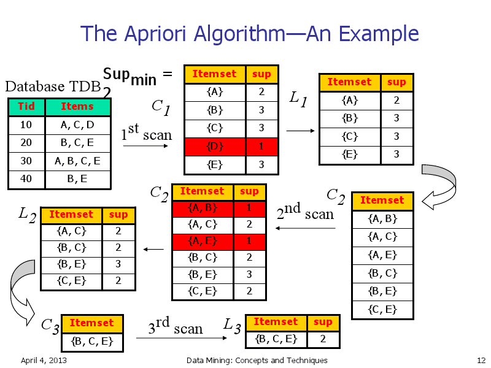

2013-04-05-Frequent-Pattern
Table of Contents
1 Frequent Patterns
2 Finding Patterns
- Cookies frequently purchased with milk
- Website signups frequently occurring after reading FAQ
- DNA sections frequently seen with a drug reaction
2.1 Patterns notes
- set of items
- subsequences of actions
- substructures
- Generalized to any kind of pattern that occurs "frequently" in the dataset
3 Market Basket
- What things are frequently purchased together?
- Apocryphal example: beer and diapers
- Can be used for any natural grouping
3.1 Details notes
- Example of how patterns are discovered is to look at groups of actions
- One natural group is the shopping basket: what items are in it?
- But can also be applied to anytime there is a natural grouping
- Eg. web session logs group naturally around a person and time window
4 Define "Frequently"
- Action
AandB- Support
- probability that a transaction contains
A ∪ B - Confidence
- conditional probability that a transaction having
Aalso containsB
4.1 Probabilities notes
- We have two actions
AandB - Out of all the groupings, how many had both items?
- Out of all the groupings with
A, how many hadB?
5 Minimums two_col
- Min Support
- lower bound on support probability
- Min Confidence
- lower bound on confidence probability
- Strong
- Rule that satisfies both minimums
5.1 "Frequently" notes
- Now we can talk about what frequently means
- It doesn't matter if two very unpopular items were purchased together: car battery and smoke detector
- Also don't care if
Ahappens a lot: everybody buys milk, so not a big deal if some bought milk and strawberries - Also important to note confidence is not symmetric: buying strawberries may be frequent with buying milk, but not visa versa
6 Too Many Rules
- Patterns not limited to 2 events
- But looking for all patterns leads to combinatorial number of options
| a,b,c,d,e |
| a,b |
| a,c |
| … |
| a,b,c |
| a,b,e |
| … |
7 Subset Patterns
- Max-Pattern
Xrule is frequent and there exists no frequent super-patternY- Closed
Xrule is frequent and there exists no super-patternYwith the same support- Shortcut
- Find only max-pattern or closed patterns, let other patterns be subsets
7.1 Shortcut notes
- So how can we calculate all the potentially frequently occurring patterns?
- We can find either the max or closed pattern that encompasses all of the patterns we're looking for
- These are more easily tracked, and we can still derive all of the frequently occurring sub-patterns
- We can use the reverse: if a rule or item is not frequent enough alone, its
super-set will not be frequent enough:
- If
Ais does not meet min support, there's no way forA,Bto make support
- If
8 Apriori
- Find supported single event rules
- Combine to make 2-event rules, check DB for support
- Combine to make 3-event rules, check DB…
- Stop when no N-event rules
9

9.1 Speed notes
- Isn't that slow? Yes!
- Book has some techniques to speed it up, mostly around grouping
- Can group together sets and if the group does not meet the support threshold, then none of the members do
10 Interesting Patterns two_col
- Strong rules may not always be interesting rules
- Basketball => eat cereal [40%, 66.7%] is strong
- But "not cereal" has a bigger effect on if you play basketball
| Basketball | Not basketball | Sum | |
| Cereal | 2000 | 1750 | 3750 |
| Not cereal | 1000 | 250 | 1250 |
| Sum | 3000 | 2000 | 5000 |
10.1 Details notes
- Not cereal column: has a huge effect on if someone plays basketball
- cereal + basketball… sure it happens frequently, but you'd actually expect to see a bigger effect
11 Lift
P(A ∪ B) / P(A)*P(B)- If
AandBindependent, what is likelihood ofAandB?
11.1 Correlation notes
- 1
- so if lift > 1, you're seeing something that is happening more often than random
- < 1 means they negatively correlated
- X2, cosine, others in book